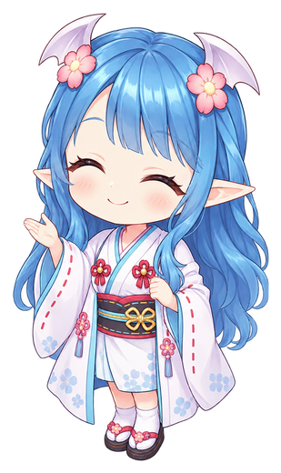
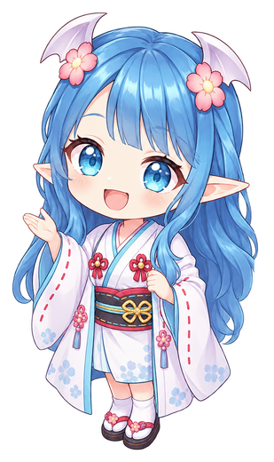
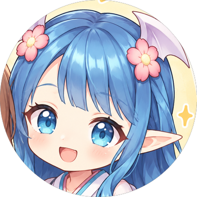

ABOUT
こんなモヤモヤ、ありませんか？
なんであの人と話が噛み合わへんの？
ちゃんと説明したのに、なんで伝わってないん？
悪気はないのに、なぜかいつもすれ違う…
それ、性格のせいやなくて
「脳の仕組みの違い」かもしれません。
職場の人間関係、パートナーとのすれ違い、家族や友だちとのモヤモヤ。
前者後者論で見てみると、ちょっとラクになるかもしれません。
「脳の仕組みの違い」かもしれません。
職場の人間関係、パートナーとのすれ違い、家族や友だちとのモヤモヤ。
前者後者論で見てみると、ちょっとラクになるかもしれません。


MEMBERS
研究員しょうかい

ree
A前者夫：後者（図書館）
広い交友関係から生まれる、いろんなネタを持ち込みます。
ミーナッツ
B前者夫：後者（ブラックホール）
息子：D前者
むずかしい仕組みも、たとえ話でわかりやすく紐解いてくれます。
2人とも心理学が大好き。
関西弁でゆるっと話します。
START HERE
はじめての方へ
- 1前者後者論ってなに？▶ 見る
- 2前者ってどんなん？準備中
- 3後者ってどんなん？準備中
- 4前者の脳タイプ（4種類）準備中
- 5後者の脳タイプ（5種類）準備中
話がわからんくなったら、いつでもここに戻ってきてください。
これまでにお答えした質問
Q
A
#3でお答えしました口出しや世話焼きは、関心があるからこそ。「すごいね」より「ありがとう」が効く話も。
▶ 見る
トシさん（後者・ブラックホール）より
前者さんの愛情表現について聞いてみたいです。後者からの愛情表現はストレートで分かりやすいけど、前者からの愛情表現はたぶんキャッチできていなくて、スルーしていると思います。
LINKS